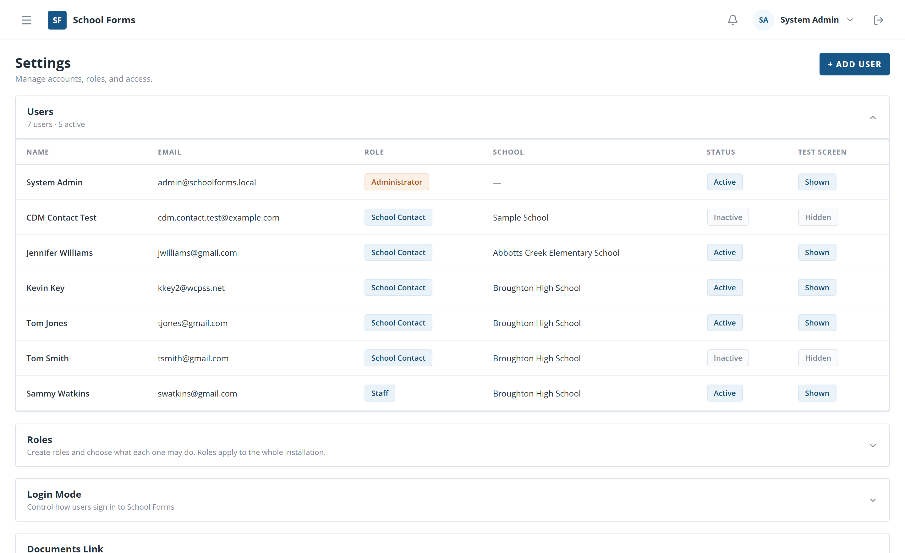
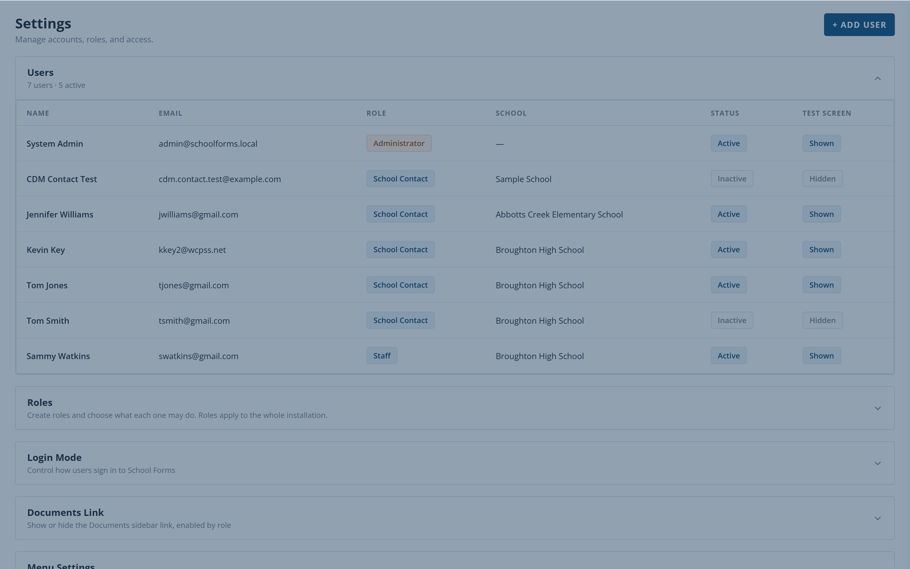
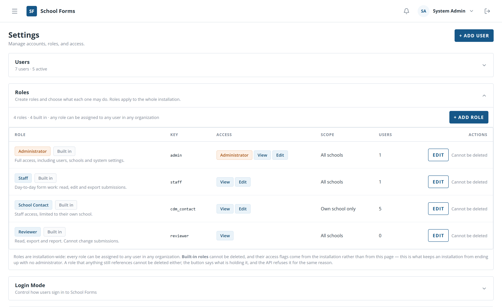
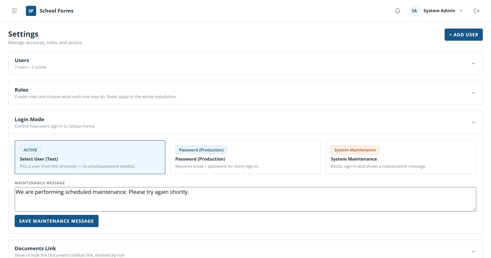
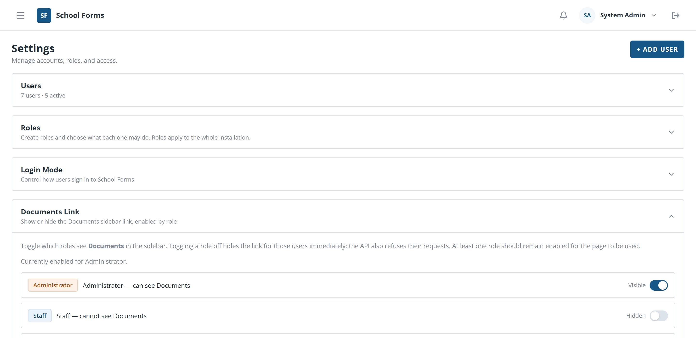
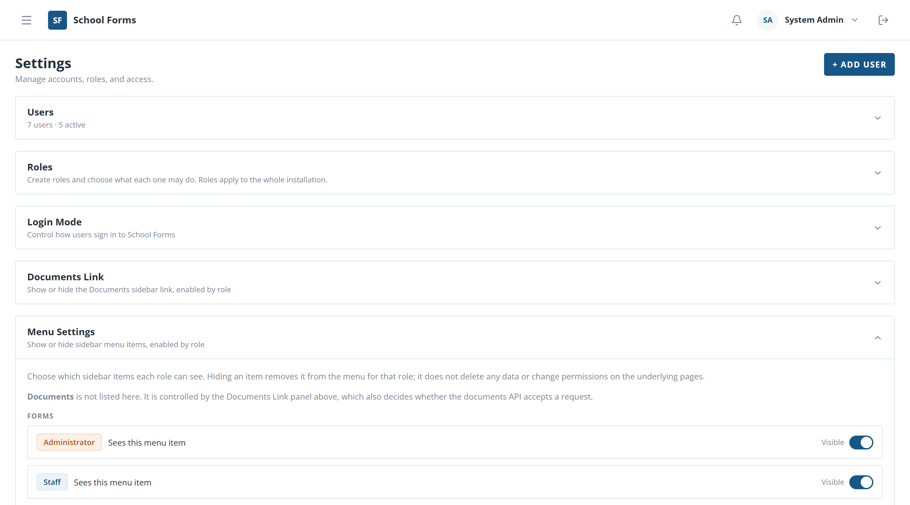
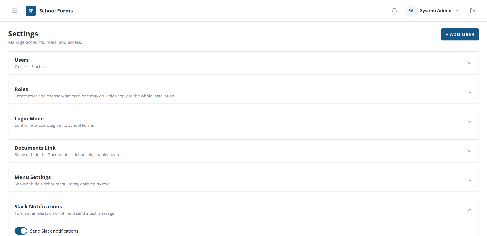
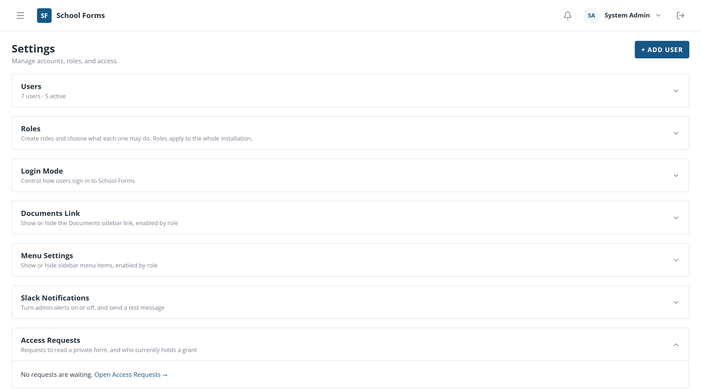
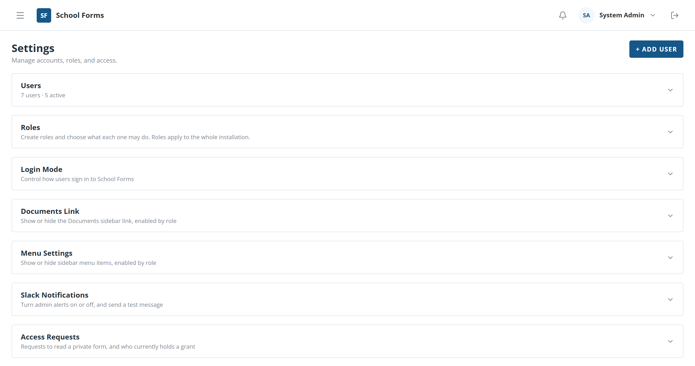
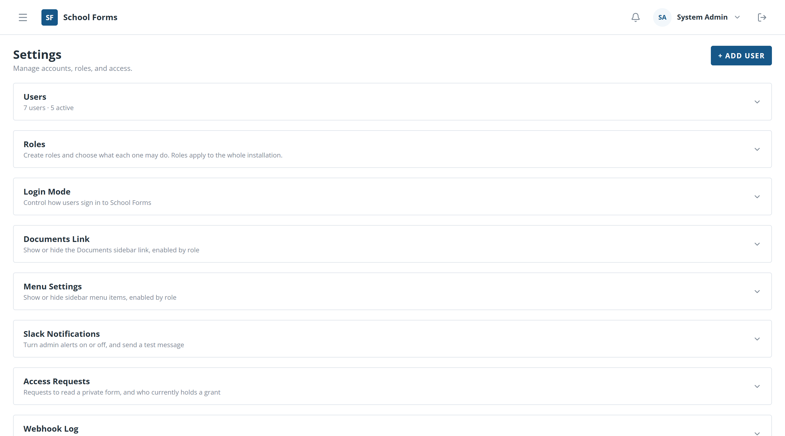

School Forms
Settings Reference
Companion to the Admin Guide
Everything an administrator configures lives on one page, Settings, arranged as twelve collapsible sections. Click a section's heading to open it; the others stay closed, so the page never becomes a wall of controls.
Further down the same page: Slack Notifications, Access Requests, Webhook Log, System Messages, Organizations, Schools and School Name Matching — chapters 7 to 13.
Most switches and role buttons save immediately — there is no page-wide Save. Where a change is risky, the app asks you to confirm first, and the confirmation states what will happen.
If your installation has more than one organization, the Users section lists and edits only your own. That is a boundary, not a bug.
The Users section lists every account in your organization, with how many are active.

1 2 3 4Each row also shows the account's Name, Email and School.

1 2 3The panel's own save button applies all of it together.
There is no "forgot password" link. When someone is locked out, an administrator issues a temporary password from this panel. The user signs in with it once and is then required to choose a new password before they can reach any other page.
A temporary password is known to you as well as to them. Forcing a change at first sign-in is what stops it from becoming a permanent shared secret. The row shows a marker while that change is still outstanding.
The app refuses it, so an installation can never be left without an active administrator.
Roles are what you assign to accounts. Each one carries three access flags and an optional school scope, and the flags apply across the whole installation.

1 2A role in use cannot be deleted until those references are cleared.
| Role | Built in? | Notes |
|---|---|---|
| Admin | Yes | Full access, including Settings. Cannot be deleted. |
| Staff | Yes | Sees every school in the organization. |
| School Contact | Yes | Limited to their own school. |
| Any role you create | No | Starts with no access to existing staff-only fields or private forms. |
The installation re-creates its built-in roles and resets their access flags whenever it starts. That is what keeps an installation from ending up with nobody able to administer it — and it means editing a built-in role's flags will not stick. Create a new role instead.
Creating a role does not give it access to existing private forms or staff-only fields. Grant those in Users → Edit User and in the form designer's Access row.
Login Mode decides what the sign-in screen does for everybody.

1 2 3In Select User mode anyone who reaches the sign-in screen can choose any account, including an administrator's. Use it only on an installation that holds no real data, and switch back to Password before real submissions arrive.
It keeps existing sessions working for a short time while it stops new sign-ins, so you can finish a migration or restore without yanking the app out from under people mid-task.
Controls whether the Documents menu item exists, separately for each role.

1 2There is deliberately no second control for it in Menu Settings. If a role cannot see Documents, this switch is the one to check.
Hides individual menu items from individual roles. Useful when a role should not be distracted by a section it never uses.

1This section tidies the menu. It does not stop someone reaching a page by typing its address — access is decided by roles, form visibility and staff-only field access. Treat it as decluttering, not security.
You cannot hide Settings from an administrator role, and the Webhook Log stays reachable from this page even when its menu item is off.
Turns administrator alerts on or off and lets you prove the connection works.

1 2 3The webhook address is configured on the server, not in this page. Tell whoever maintains the installation — the test button reports the failure but cannot fix it.
The same queue as the Access Requests page, shown here so you can answer a request without leaving Settings.

1 2Requests also arrive in the bell in the banner, which is always available to administrators even when the Access Requests menu item is hidden.
A preview of the full log, with a link to open it.
See the Admin Guide, Part 6, for what each rejection reason means and which ones can be replayed.
Banners shown at the top of every page until each person closes them out. Use them for planned maintenance, a deadline, or a change in process.
 1
1
Removing a message takes the banner away from everyone who has not yet closed it.
Each person closes a banner for themselves only. If you need everyone to see a message again, edit it — the change makes it reappear.
Organizations are tenant boundaries. Schools are shared across all of them, but accounts, forms and submissions belong to one.

1 2If your district runs a single School Forms installation, you will rarely open this section. It matters when one installation must serve separate groups that should not see each other's data.
The district school list, maintained by hand. It matters more than it looks: a submission is routed to a school by matching the parent's answer to a name in this list.

1 2A submission keeps the parent's own words. Renaming a school here changes future matching, not what was already recorded — see the next chapter for the answers that no longer match.
When a Google Form asks for a school, parents type whatever they like — "Broughton", "Broughton High", "Broughton High School". This section lists the answers that do not match a school in the list, so you can match each one once and fix it for good.
 1
1
The submission keeps the parent's own words; the match is recorded alongside. That is why a staff member opening the submission sees the original spelling with a note saying which school it was matched to, and by whom.
The first week of a new form is when most unmatched spellings appear. Matching them then is far quicker than reconciling a term's worth of submissions later.
| Section | What it controls | Saves |
|---|---|---|
| Users | Accounts, roles, schools, form access, temporary passwords | Per panel |
| Roles | What each role may do, and whether it is school-limited | Per role |
| Login Mode | Password, test-user, or maintenance sign-in | Immediately |
| Documents Link | Which roles see the Documents menu item | Immediately |
| Menu Settings | Which roles see which menu items | Immediately |
| Slack Notifications | Admin alerts on or off; send a test | Immediately |
| Access Requests | Pending requests for private forms | Per decision |
| Webhook Log | Recent Google Forms responses, including rejected ones | Read-only |
| System Messages | Banners shown to everyone or to roles | Per message |
| Organizations | Tenant boundaries | Per organization |
| Schools | The district school list | Per school |
| School Name Matching | Unmatched school answers, matched once and for all | Per match |
Day-to-day work — forms, the designer, submissions, reports — is in the Admin Guide. What staff and School Contacts see is in the Staff Guide.